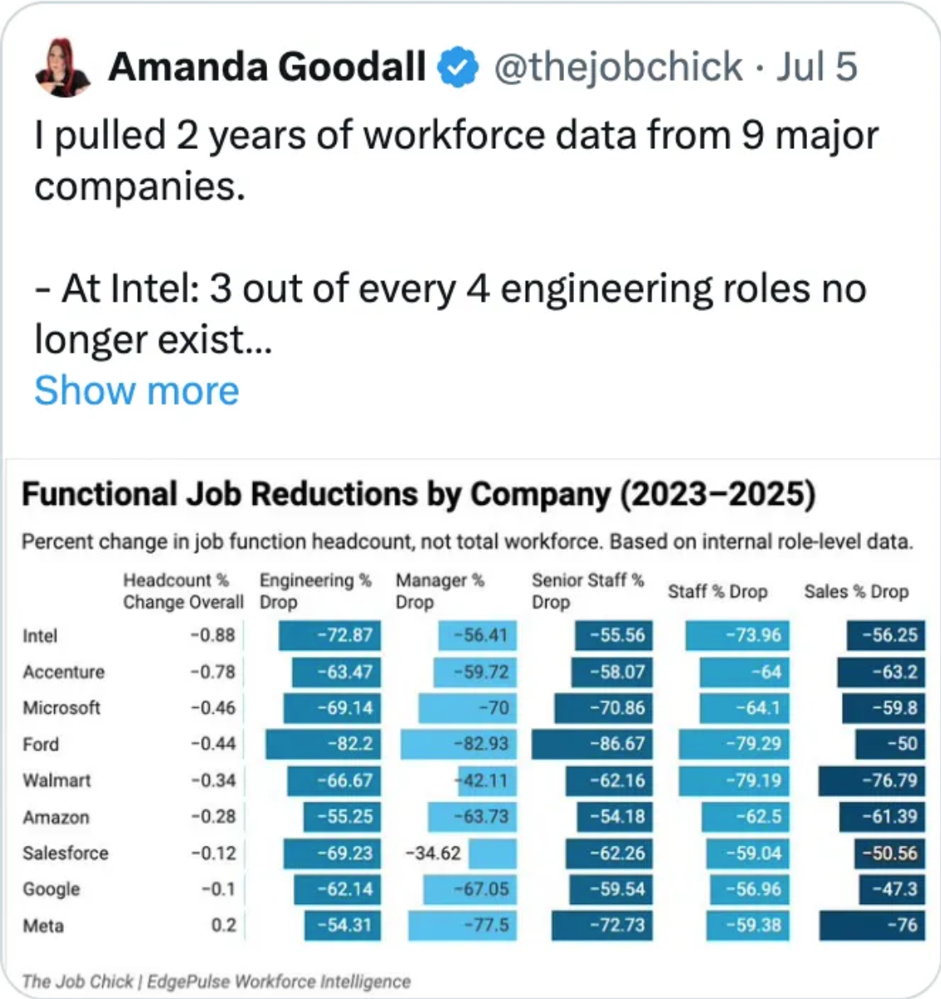
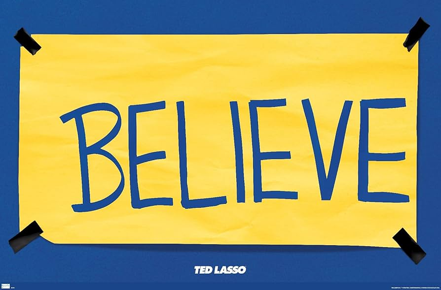

Doing better in AI Era
Like it or not... AI is here and is creating disruption. Does not matter how good or bad AI it is, the fact is that is changing people perceptions and behaviors. Some CEOs are already pushing companies to use AI very hard(like Shopify, Microsoft, Google, and X). AI(Gen-AI) is good but there is a some concerning stuff happening, like:
- There is a overal reduction in the number of jobs available(https://www.trueup.io/job-trend).
- There is a posibility that will reduce wages/salaries(https://thejobchicksinsideredge.substack.com/p/inside-amazons-offshoring-playbook).
 * Print screen from https://thejobchicksinsideredge.substack.com/p/inside-amazons-offshoring-playbook on tweet of JUL 6, 2025.
Some of this movements are not enterily to AI credit, for instance, the pandemic(COVID/2019) was a big factor in slowing down the economy and TECH was in a bubble(free money in USA is over). Companies always like to optimize and reduce costs, and people are very exmpensive. So some of this movements have nothing todo with AI but combined we are in a complex situation where things are a bit harder and more uncertain and way more competitive than before.
I'm mostely optimistic about AI and do belive in Jevons paradox(https://en.wikipedia.org/wiki/Jevons_paradox). I dont think AI is magic and will replace all engineering but if you suck, if you performance is very poor you are at high risk. So we must be doing better.
Producing Code
Considering Generative AI, producing code(even a lot of it) is nothing now a days. Anyone can produce a lot of code(look tools like Claude Code, OpenAI codex CLI, Gemini CLI, Google Jules, GitHub Copilot, Cursor). So do not think producing code is the most impressive thing. However producing good code still matters, knows proper design, testing, and architecture are very important skills. How do you know what is good code? Think about that! Why I'm talking about this? Because you must change your mind and mindset and delivery, delivery matters the most but just deliverying is not good enought never was and never will be. You must deliver good code, that is maintainable, testable, and scalable.
Throwing AI generated code at someone is like searching something in google, get the first anwser and just present that as your university thesis, how that went in the past? (Pretty bad and pretty wrong thing to do). So you must review more and do more homework.
Review Pressure
Since producing code is trivial and it can be done in large quantities all the presure is on the reviewers. So you must not throw code(or AI generated code) in others without reviwing and understanding it deeply, you must do you homework, meaning:
- Before submiting code to others, review and understand it deeply.
- You must know everything all the time.
- If you are touching the code, you must know.
- If you are presenting something you must know all of it.
- It cannot have a string you don't understand and dont know how it works - know it all.
- Is there a language feature or token? you must kwnow it.
- There is a text taling about algorithims or some technique like Cache Locality or Greedy Algorithms? You must know it.
- IF you don't know you:
- Must learn it.
- Must do a POC.
- Must see videos on the web.
- Must read papers and the official documentation.
Be a Killer when the matter is delivery
- Always meet people expectations and deadlines.
- Always do more than people asked of you.
- Always do a lot of tests.
- Always understand everything you are doing.
- Always be proactive and take the lead, ask questions and be on TOP of everything.
- Always research, read papers, and check information, double check, LLM still halucinates.
- Always compare with other solutions, do benchmarks and different implementations.
- Always have great documentation and do great UI/presentations.
- Ask for feedback, often and frequent, are you presenting? do many dry runs.
Aplied Learning
All learning must be applied in day-by-day work otherwise is not useful for you and you are loosing opportunidies to do better and have better performance. Performance always matter and you must think about this, when people talk about your name, what they think?
- A) YES Mr X is a killer, I want him badly.
- B) OH No MR Z sucks, pls I pass dont need him.
Everyboddy is being watched and measured all the time, you track record matters a lot, so keep in mind, what performance do you want associated with your name? The great one or a bad one? Performance is key for future improvements and opportunities, so you must be doing better all the time. You are RESPONSIBLE for your performance, excuses and blaming others will make you not good. Dont look for excuses, look for oportunities to grow and feedfack, there are always opportunitites to do better, so be proactive and look for them.
Continnous Improvement
AI is being trained and improved all the time, so you must be doing the same. You must be improving all the time, you must be learning and applying this learning in your day-by-day work. You must be proactive and look for ways to improve your performance, your code, your design, your architecture, your tests, your documentation, and your presentations.
Why AI is getting better? Because is being measured. Every single new model, they always disaplay benchmarks they beat up. We can learn something from that. You must know your numbers, would know your performance by heart, so tell me?:
- How many PRs you did last month?
- How many Tests you wrote?
- How many bugs you fixed?
- How many features you delivered?
- How many reviews you did?
- How many presentations you did?
- How many meetings you attended?
- How many people you helped?
It's always a good idea have an EXCEL and track all this things everyday, the better you know your number, easier is for you to beat team.Going DEEP is the only way to improve, if we are not in TOP of things and dont master our GAME we are not doing better, so you must be doing better all the time.
Obeservability is everything. Think about a F1 race, if you dont know how long take to do a lap, you cant beat your team. Several engineers think they are killing it and doing fine but is they ask the right people, mentors, they might realize they are not there. So the important thing is to always ask and align expectations(https://diegopachecotech.substack.com/p/expectations), so here is a seconf suggestion for tracking:
- Story ID or link(maybe issue tracking link)
- What date you started?
- What was the estimation from the manager?
- What date you finished?
- Did you beat the estimation or not?
- Notes of what happened and why, did you have any delays or surpises?
Whith that, you can build ownership. Extreme ownership is very much needed. You can ask you self, consider last 10 items, I'm beating the time always? You might be wonder, why to ask a manager estimates(and must be days, story points is useless)? Because people have exceptations and they dont tell you, usually and a EM or director set of exceptations not meet could get you fired.
Engineers always assume they are doing great, but in reality they are not, because they calibration is wrong. So let me give you better calibarion:
- Zero story delivered per week is bad.
- Zero story per sprint is very bad.
- You must deliver all that was addressed to you.
- Push back, when is not clear or when requirements, business rules are missing.
- You will be held accoutable for you performance, so you must be on TOP of your numbers.
- Lack of feedback is not good feedback.
The Way Forward
- Be Curious, always ask questions, always learn.
- Be Proactive, always take the lead, always be on TOP of things.
- Be a Killer, always deliver, always do more than expected.
- Have constant discipline, learn all the things you dont know, repeat.
- Avoid complacency. Do not be happy with little, always do more, always be better.
- You promise, you deliver, so always write down, always remember, be someone reliable like a rock.
- Go Deeper, know better, invest more on POCs, reading papers, videos and do not avoid hard problems, face hard problems early on.
 * Ted Lasso reference: https://www.imdb.com/title/tt10986410/ (highly recommended).